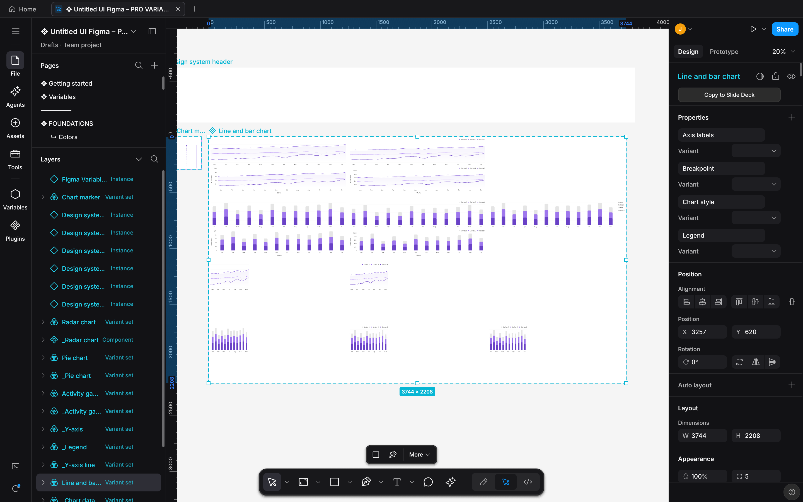
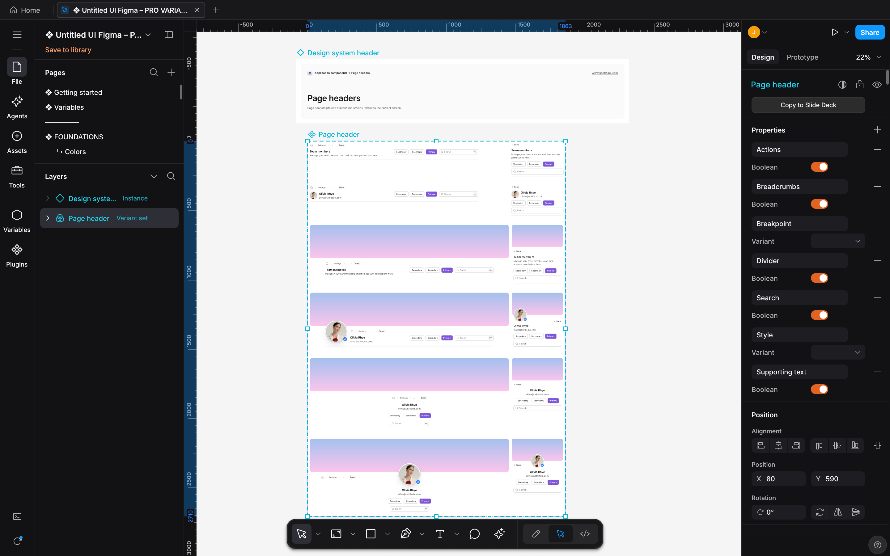
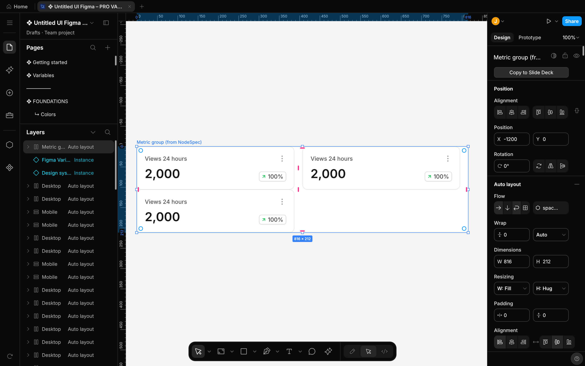
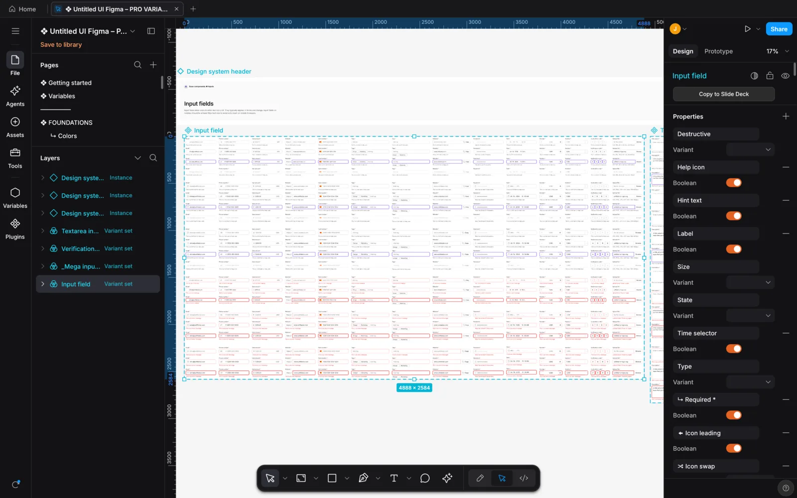
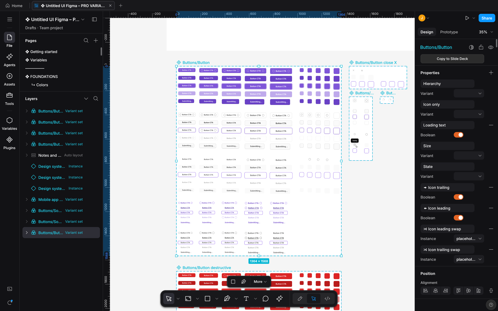
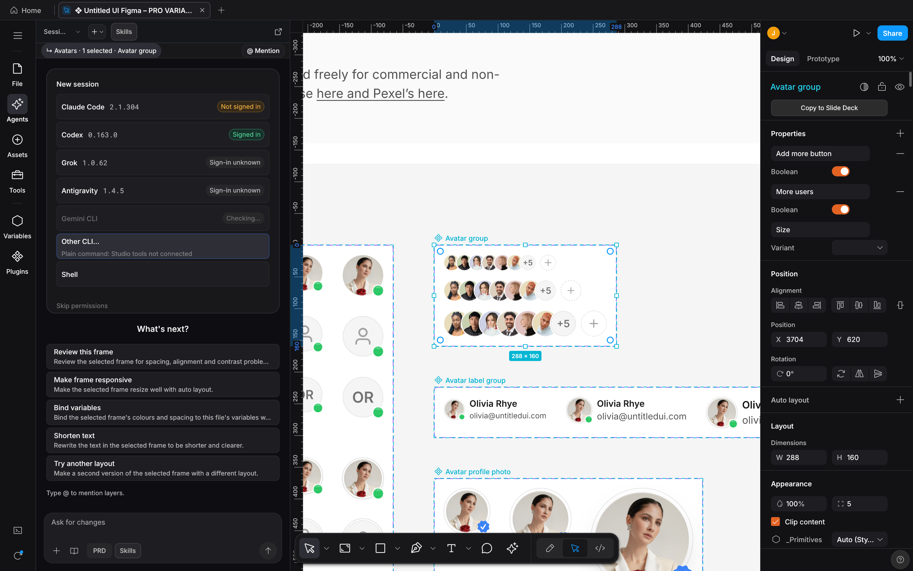
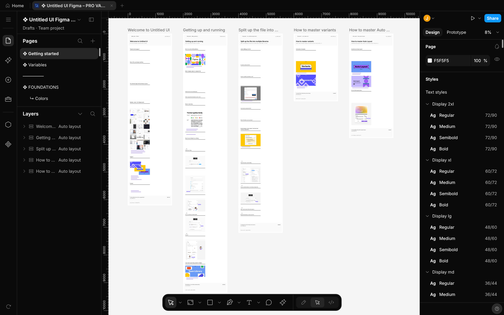
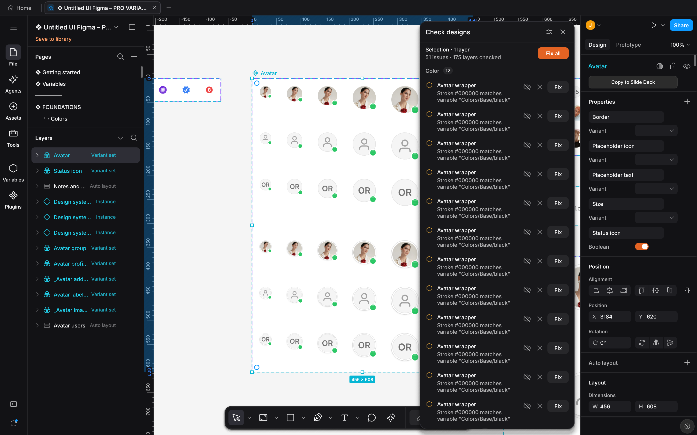
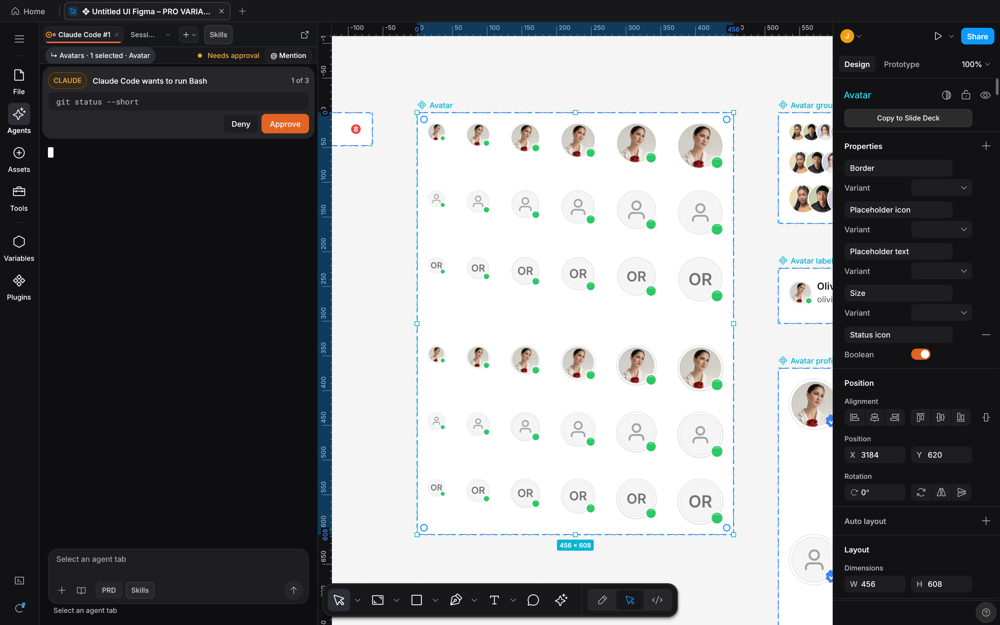

207,601
nodes in one file
The Untitled UI PRO v8.0 Figma kit opens and renders on the GPU, across 113 pages.

Open Figma files, paste from Figma desktop, and let a coding agent build on the same canvas.
Windows · Linux · all downloads

Each card states one fact. Its back is a real capture from Studio.
207,601
nodes in one file
The Untitled UI PRO v8.0 Figma kit opens and renders on the GPU, across 113 pages.

36
MCP tools
Coding agents edit the document you have open through designos-mcp. Built-in presets: Claude Code, Codex, Grok, Antigravity and Gemini CLI.

8
code targets
Dev Mode prints CSS, Tailwind, React, SwiftUI, UIKit, Compose, Android XML and HTML.

Studio opens your .fig file in a native window. The canvas draws it on the GPU, the Layers panel and the inspector edit it, and the Agents rail opens a coding agent beside your work.

01 Figma
.fig files. Open a Figma file, edit it, save it back..fig file brings its effect styles, grid styles and variable modes with it.
02 Agents
designos-mcp. Built-in presets for Claude Code, Codex, Grok, Antigravity and Gemini CLI.
03 Code
207,601 nodes on 113 pages
That is the Untitled UI PRO v8.0 Figma kit. The canvas draws it on the GPU through wgpu.
Large pages render at low zoom, and after a quarter second without changes the canvas draws one full-quality frame.

Notes for every release are in the CHANGELOG. The newest is 0.6.1, a short list. v0.6.0 has captures from the release build, and older releases are short lists.
>_ rail button are gone. Cmd+` (Ctrl+` on Windows and Linux) opens and closes the Agents panel. Agents ask before acting by default.Save changes to {name}? before a close, a quit or an open drops edits to a file outside the library, and asks before a file changed on disk replaces them. On macOS, Cmd+Q asks too. An agent that opens another document no longer replaces yours..fig files. Export never replaces an existing file and says where it wrote. designos --export-fig refuses a path that does not end in .fig and a symbolic link, and needs --overwrite to replace a file. A save or export to .fig or .pen warns when it leaves comments out.designos --version prints the version, and a file argument that is not on disk stops with an error.Real screenshots from the v0.6.0 macOS build, captured headlessly with designos-studio --screenshot (2x) on a copy of the Untitled UI PRO v8.0 Figma kit, by Untitled UI. Click an image for full size. The approval card comes from the built-in --panel agents-approval-queued preview.


Also in 0.6.0
--import-variables and --export-variables. An import merges into the file and reports what it skipped.designos_apply_batch and check their work with designos_lint..fig files. Export follows Figma’s own field numbering, types and enum values, and slot preferred values are written as Figma’s real object..fig files, per-child align-self, and an Update auto layout action that upgrades an older frame..fig..fig files bring their effect and grid styles.Verified on macOS. The Windows and Linux packages are built by the same release workflow but are not verified before release. On a Mac, the first launch needs Open Anyway once. All downloads and checksums
/plugin marketplace add jangtrinh/design-os-studio
/plugin install design-os-studio@design-os-studiogit clone https://github.com/jangtrinh/design-os-studio /tmp/design-os-studio
mkdir -p ~/.codex/skills/design-os-studio ~/.codex/prompts
cp -R /tmp/design-os-studio/skills/design-os-studio/* ~/.codex/skills/design-os-studio/
cp /tmp/design-os-studio/prompts/doctor.md ~/.codex/prompts/design-os-studio-doctor.md
rm -rf /tmp/design-os-studiogit clone https://github.com/jangtrinh/design-os-studio /tmp/design-os-studio
mkdir -p ~/.gemini/skills/design-os-studio
cp -R /tmp/design-os-studio/skills/design-os-studio/* ~/.gemini/skills/design-os-studio/
rm -rf /tmp/design-os-studioA native desktop design editor written in Rust. It draws on the GPU with wgpu, opens and saves Figma .fig files, and bundles a local server so coding agents can edit the open document.
Yes. Studio opens and saves .fig files. You can also copy layers in Figma desktop and paste them onto the Studio canvas with Cmd+V. They land centered in the view as one undo step, images included.
Studio bundles designos-mcp, a local MCP server, and an Agents panel with built-in presets for Claude Code, Codex, Grok, Antigravity and Gemini CLI. Agent edits replay into your open document, wait while you drag, and each one is its own undo step.
macOS, Windows and Linux. Releases are verified on macOS; the Windows and Linux packages are built by the same release workflow but are not verified before release. On a Mac, the first launch needs Open Anyway once.
PolyForm Shield 1.0.0: free to use and modify, including for commercial work, but you may not resell it or offer a product that competes with it. The source is on GitHub.
Source-available. macOS, Windows and Linux.